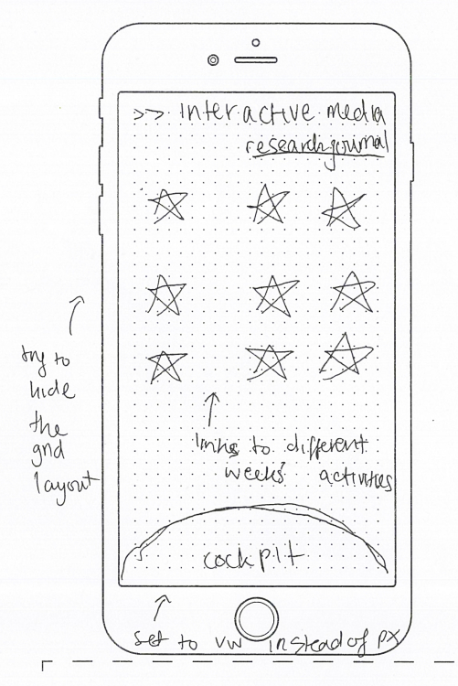

fluid design
The hardest thing to implement for a responsive mobile version of my webpage was the layout of the celestial bodies. I knew I had to use a grid system to preserve the layout, but wanted the images to be distributed in a way that seemed more natural. I made some initial sketches for the mobile version of the site, which largely preserves all the desktop elements. In the end, my solution was to use different fr values for different rows so that the grid cells would be spaced unevenly.

This fluid design was implemented successfully, with the only difference being that the uneven sizing of the images due to different grid widths. However, as I am simulating a spaceship cockpit view for this site, the smaller image sizes add to immersion by making them seem further away.
media queries
Media queries were used to alter the functionality of my site on mobile. For example, as mobile users cannot hover over images, I disabled the tooltip feature on mobile. I also used media queries for minor layout changes that fit mobile screens better.